Drop Drone Delivery Dashboard
A dashboard designed to be used by the operation manager of a fleet of delivery drones. Created to provide quick insights along with in-depth information.
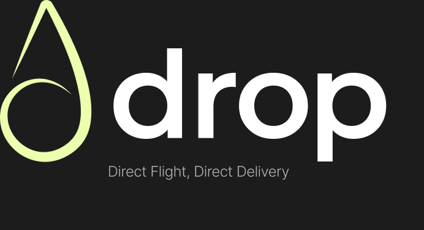
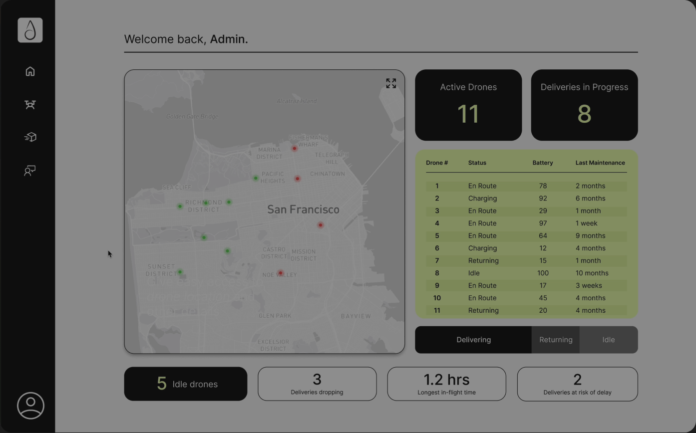
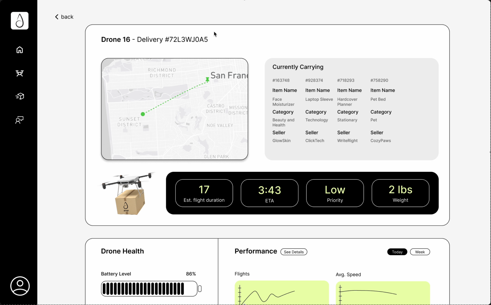
Concept
This dashboard accompanies a self-automated drone delivery app.
The user focused app would be a drone-powered delivery platform that allows customers to place orders and track their packages as drones transport them.
The dashboard is the admin side of the app, designed for an operations manager to monitor the entire fleet of drones. It would allow the admin to track location of the drones, monitor deliveries, watch drone battery/maintenance, etc.
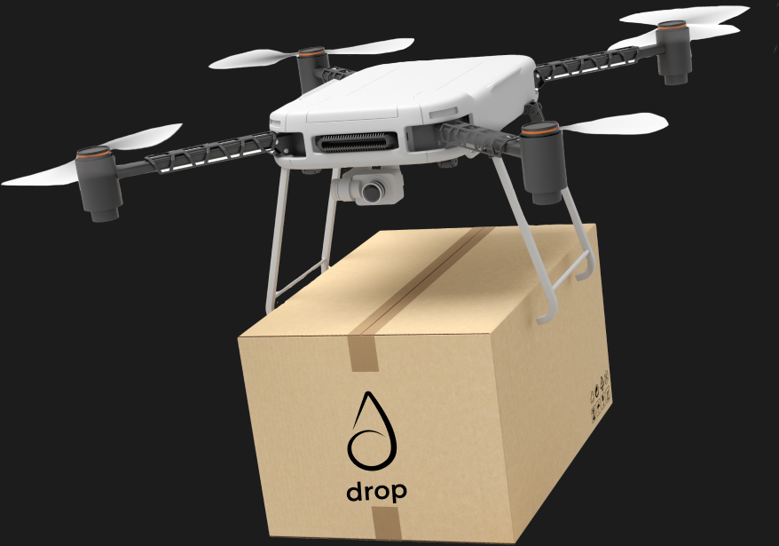
PROJECT GOAL
Create a clean, real-time dashboard that shows the most critical information quickly, with drill-down options for deeper insights.
The User
USER PERSONA
Drone fleet operations manager
Their questions and goals
- How efficient is the drone fleet overall?
- How many/which deliveries are on time, or delayed?
- Where are all delivery drones right now, and what are they carrying?
- Are there changes in drone performance over time?
- Are any drones experiencing low battery or technical issues?
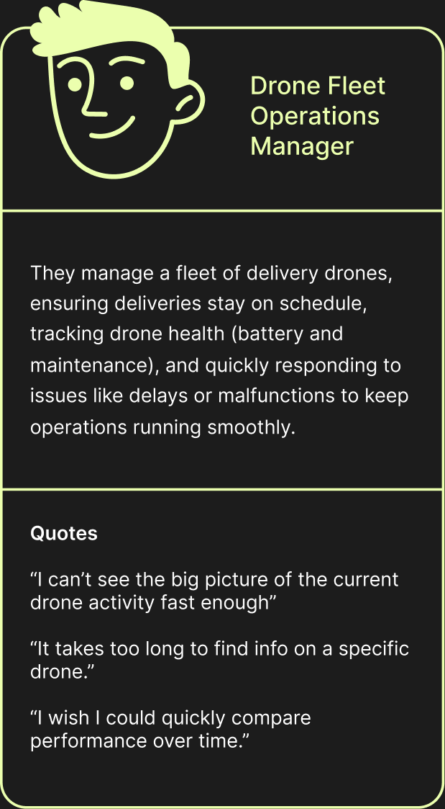
Process
Low fidelity designs
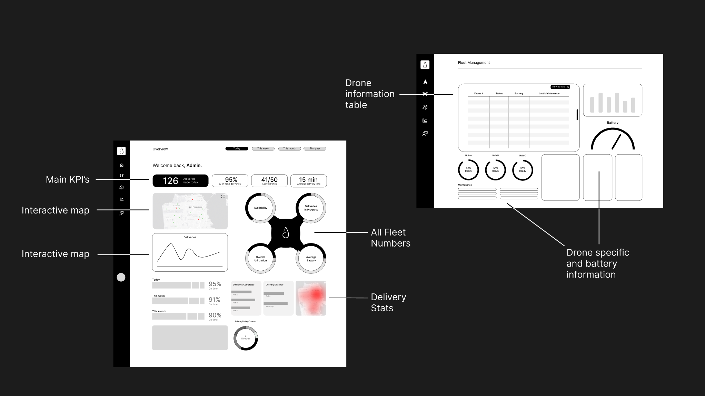
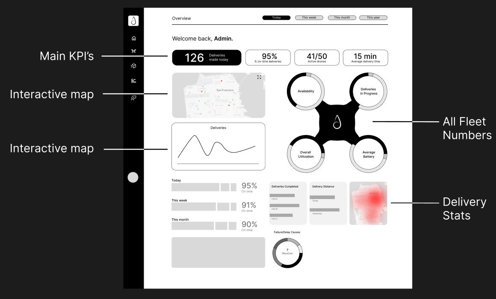
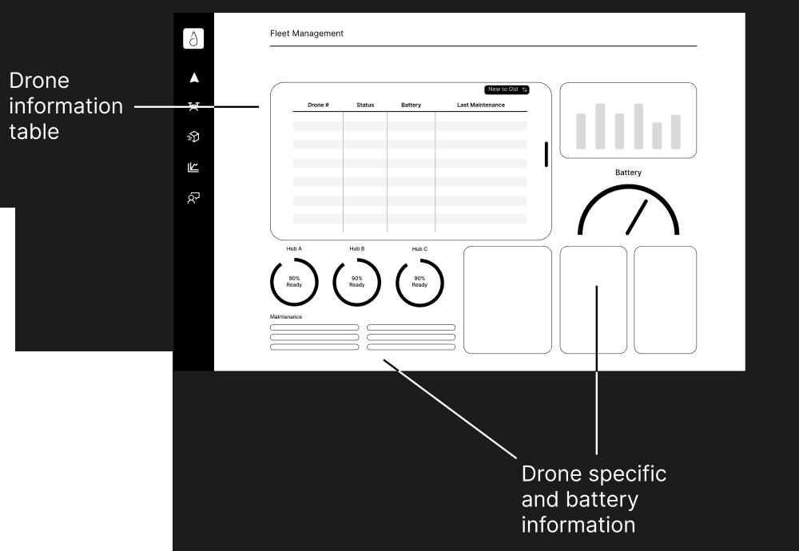
Narrowing it down
NOTES FROM MY WIREFRAMES
- “pages of different hubs rather than all?”
- “or maybe just one drone at a time?”
- “Screens focusing on one big thing: map / individual drone pages when you click on a dot / deliveries over time?”
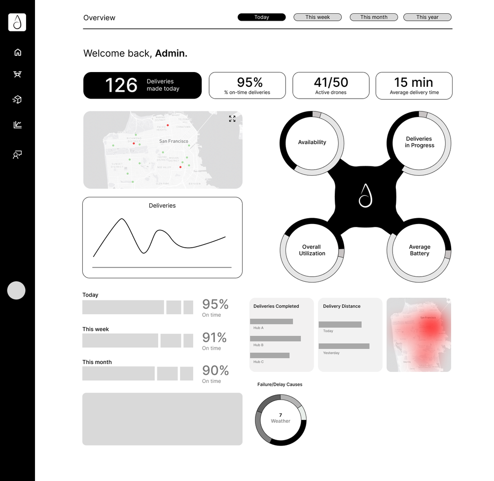
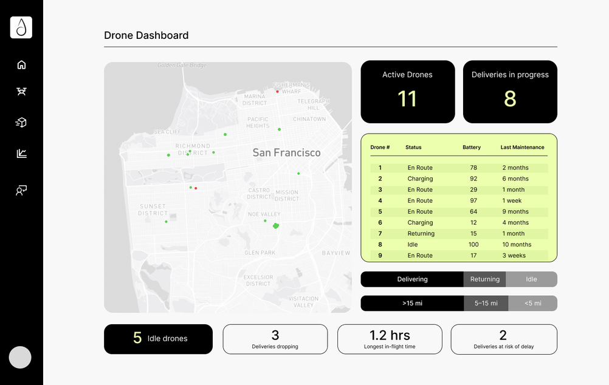
Wireframe → screens
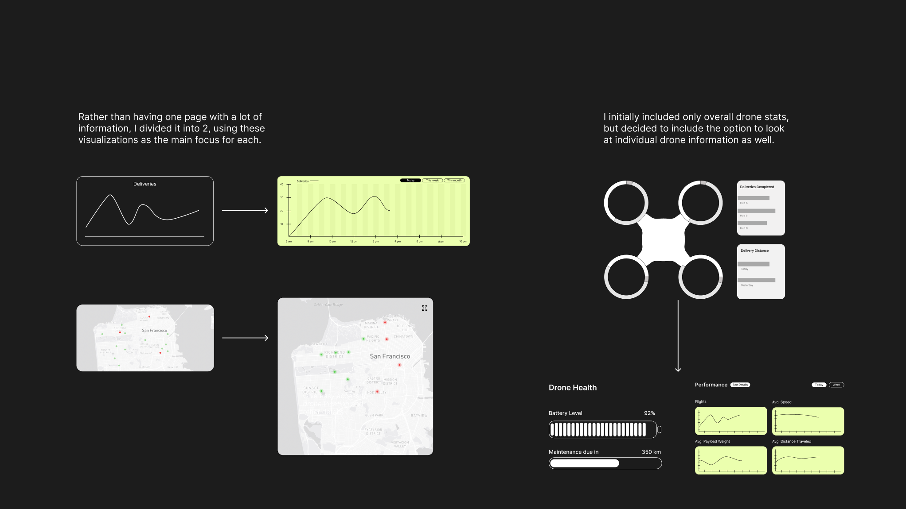
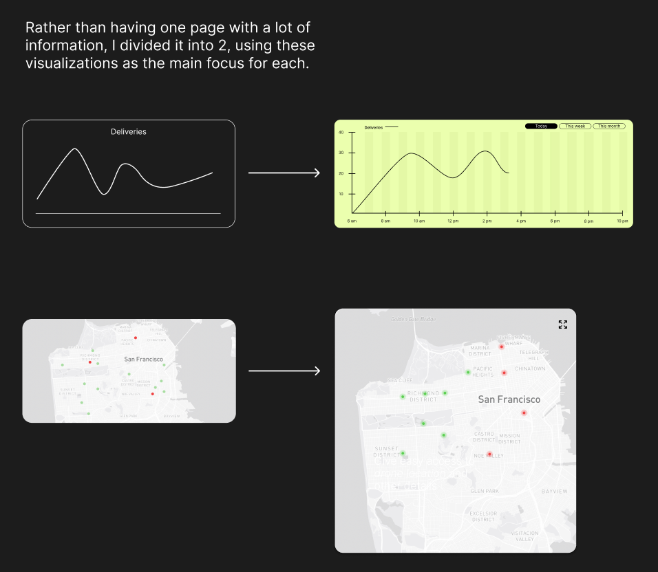
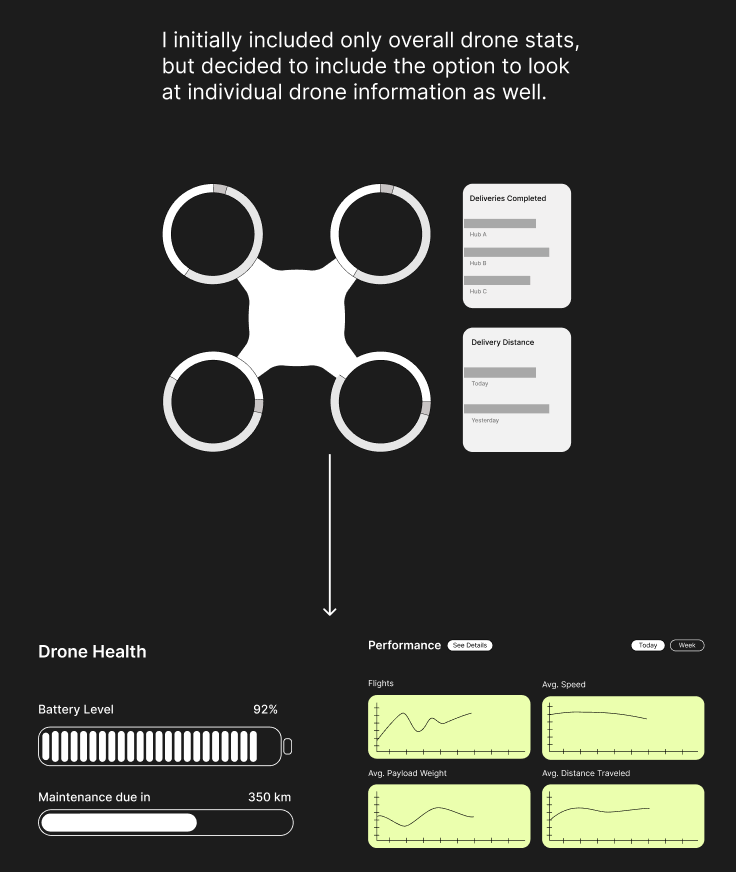
Final screens
Home Screen
Provides critical metrics at a glance, gives easy access to drone location and other details, and shows drone status distribution clearly.
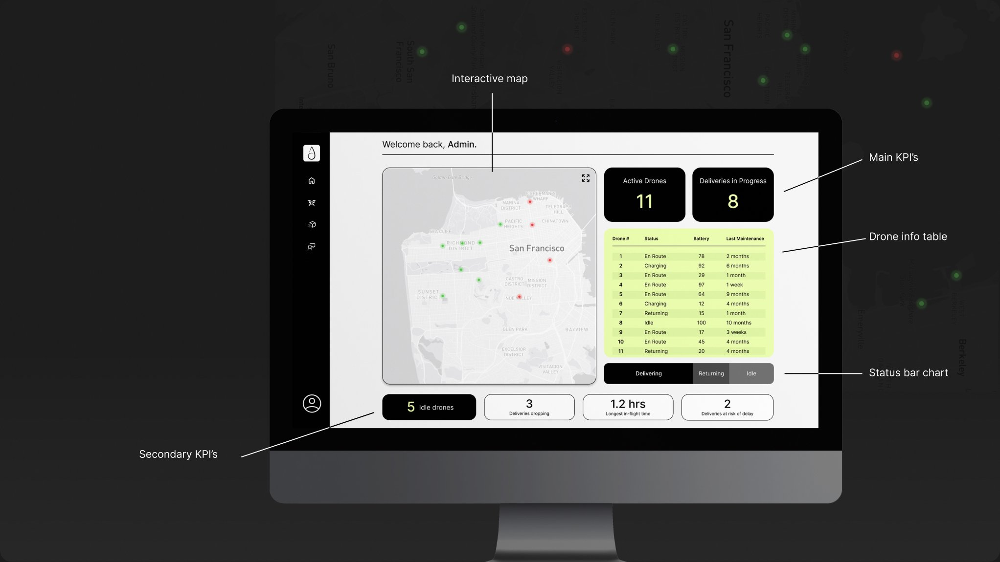
Drone Screen
Shows specific flight and delivery information, highlights time sensitive details, and shows performance and drone health in a scannable format.
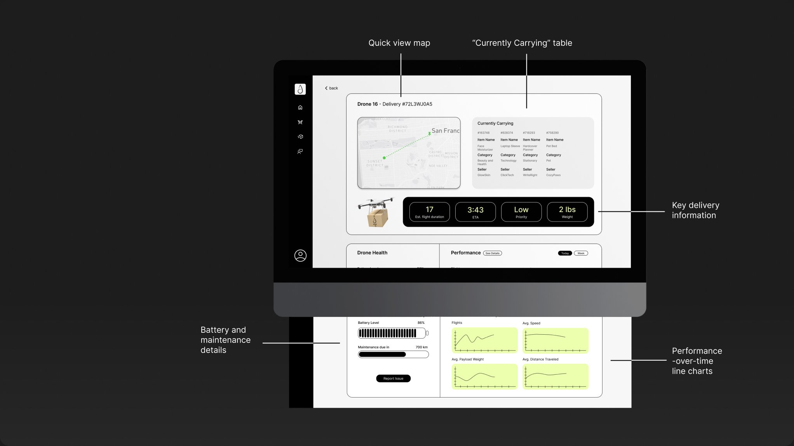
Delivery Screen
Shows delivery and efficiency metrics, compares deliveries completed by each drone, and visualizes demand for deliveries over time.
Design decisions
Home screen
The live map is the center of the home screen. Each drone is a dot: position shows where it is and color shows its battery (green is good, red is low), so problems stand out at a glance. The KPIs (active drones, deliveries in progress, idle drones) sit on bold black tiles with yellow and white text against the light screen, so the critical numbers read first. A stacked bar shows the share of drones delivering, idle or returning to base, and the drone table lists each drone’s number, status, battery and time since maintenance.
Drone screen
Each drone’s page keeps a mini map with just that drone’s flight path. Delivery details (items, flight time, ETA, priority, weight) are set apart with contrast and position for fast reading, battery and maintenance show as progress bars, and four line charts track flights, speed, payload and distance over time.
Delivery screen
The charts match the data: a line chart shows how often deliveries happen across the day, week or month, bar charts compare drones, and line charts show change over time. Hover states reveal exact values, so the screen stays clean and quick to scan.
Interactions
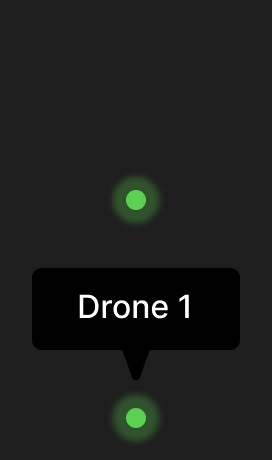
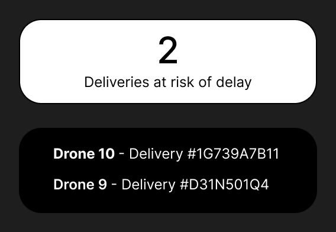
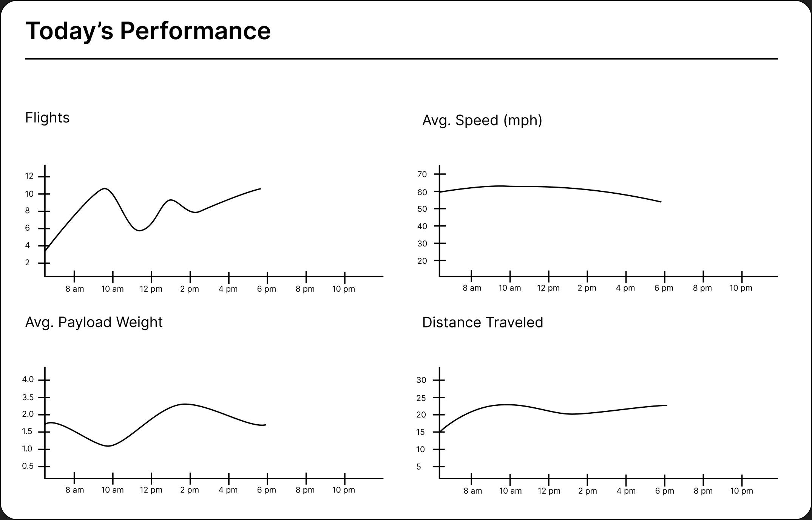
Try it out
The interactive prototype: click through the home, drone and delivery screens.
What I would change
I had four weeks for research, design and prototyping, so this dashboard is intentionally simple. It’s more focused on the experience and getting information across than refined visual design. If I came back to it, I would:
- Keep working on contrast and color. I think I brought too much color into the interface.
- Rework the navigation bar. It isn’t fully clickable yet, and I don’t think it is set up in the ideal way.